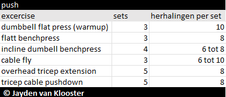
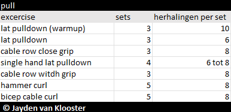
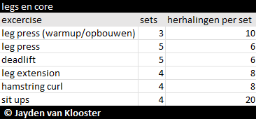

Misschien wel de belangrijkste vraag voor de meeste beginners wat moet ik trainen? Want als beginnende sporter weet je vaak niet wat je moet trainen af gezien van je doel zijn de keuze die je hebt push, pull, legs, core of cardio. En daarom hebben we hier onder een 3 daagse workout plan gemaakt voor beginners. deze 3 daagse workout plan is bedoeld dat je om de dag sport dus 1 dag sporten 1 rustdag zodat dat je spieren kunnen herstellen en je niet over traint. je kunt later als je al een aantal maanden dit programma volgt ook een 6 daags programma van maken dus dat je elke dag van de week traint en 1 rust dag in de week neemt, maar dat is meer voor gevorderde.
Een push training is een training waarbij je de gewichten van je afduwt. Hier train je je borst en triceps mee.
een pull training is een training waarbij je de gewichten naar je toe trekt. Hier train je je rug en biceps mee.
een leg training is een training waarbij je benen traint. een core training is een training waarmee je je buikspieren traint deze training kan je het met elke trainging samen doen het maakt niet uit of push ,pull of legs training doet, maar in dit geval doen we hem samen met de leg training
Is training waar bij je op conditie traint dit kan hardlopen, fietsen of roeien zijn. Met een cardio training verbrandt je de meeste calorieën. een cardio training kan je na elke traingen doen of op je rustdag.